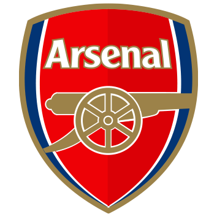

Equipos lideres de la Premier League
Actualmente en la liga los equipos lideres son:
- Manchester City
- Manchester United
- Liverpool
- Chelsea
Equipos que han sido campeones mas veces:
- Manchester United
- Chelsea
- Arsenal
- Manchester City
Historia del equipo:
- Manchester United
El Manchester United Football Club es un club de fútbol de la ciudad de Mánchester (Inglaterra) que compite en la Premier League y disputa sus partidos como local en el estadio Old Trafford. Fue fundado el 5 de marzo de 1878 bajo el nombre de Newton Heath LYR Football Club2 y se incorporó a la First Division en 1892.25 Después de estar cerca de la bancarrota en 1902, J. H. Davies tomó las riendas del club y cambió su nombre por el actual.6 Durante la Segunda Guerra Mundial su estadio fue bombardeado y durante un tiempo estuvieron jugando en Maine Road.
- Chelsea
El Chelsea Football Club (AFI: ˈtʃɛɫsiː), conocido simplemente como Chelsea, es un club de fútbol profesional de Inglaterra con sede en el distrito de Fulham (Londres), que disputa actualmente la Premier League, máxima competición futbolística de ese país. Fundado el 10 de marzo de 1905, el club se mantuvo la mayor parte de su historia en la máxima categoría del fútbol británico. Disputa sus partidos como local en el estadio de Stamford Bridge, el cual tiene una capacidad para 41.841 espectadores, y en el que ha disputado sus encuentros como local desde su fundación.
- Arsenal
El Arsenal Football Club (pronunciación en inglés: /ˈɑː(ɹ)sənəl ˈfʊtˌbɔl klʌb/) es un club de fútbol profesional con sede en Holloway, Londres, Inglaterra, que juega en la máxima categoría del fútbol de ese país, la Premier League. Uno de los más laureados del fútbol inglés, ha ganado 45 títulos en su país, incluyendo 13 campeonatos de liga y un récord de 14 Copas de Inglaterra; también ha ganado dos títulos internacionales: la Copa europea de Ferias en 1970 y la Recopa de Europa en 1994. Fundado en 1886 en el sudeste de Londres, en 1893, se convirtió en el primer club del sur de Inglaterra en unirse a la Football League. Ganó sus primeros títulos —cinco ligas y dos FA Cups— en los años 1930.
- Manchester United
- El Manchester United Football Club es un club de fútbol de la ciudad de Mánchester (Inglaterra) que compite en la Premier League y disputa sus partidos como local en el estadio Old Trafford. Fue fundado el 5 de marzo de 1878 bajo el nombre de Newton Heath LYR Football Club2 y se incorporó a la First Division en 1892.25 Después de estar cerca de la bancarrota en 1902, J. H. Davies tomó las riendas del club y cambió su nombre por el actual.6 Durante la Segunda Guerra Mundial su estadio fue bombardeado y durante un tiempo estuvieron jugando en Maine Road.
- Chelsea
- El Chelsea Football Club (AFI: ˈtʃɛɫsiː), conocido simplemente como Chelsea, es un club de fútbol profesional de Inglaterra con sede en el distrito de Fulham (Londres), que disputa actualmente la Premier League, máxima competición futbolística de ese país. Fundado el 10 de marzo de 1905, el club se mantuvo la mayor parte de su historia en la máxima categoría del fútbol británico. Disputa sus partidos como local en el estadio de Stamford Bridge, el cual tiene una capacidad para 41.841 espectadores, y en el que ha disputado sus encuentros como local desde su fundación.
- Arsenal
- El Arsenal Football Club (pronunciación en inglés: /ˈɑː(ɹ)sənəl ˈfʊtˌbɔl klʌb/) es un club de fútbol profesional con sede en Holloway, Londres, Inglaterra, que juega en la máxima categoría del fútbol de ese país, la Premier League. Uno de los más laureados del fútbol inglés, ha ganado 45 títulos en su país, incluyendo 13 campeonatos de liga y un récord de 14 Copas de Inglaterra; también ha ganado dos títulos internacionales: la Copa europea de Ferias en 1970 y la Recopa de Europa en 1994. Fundado en 1886 en el sudeste de Londres, en 1893, se convirtió en el primer club del sur de Inglaterra en unirse a la Football League. Ganó sus primeros títulos —cinco ligas y dos FA Cups— en los años 1930.
Manchester United Chelsea Arsenal 
 Si necesitas mas informacion sobre la Premier League,haz click en el link de abajo: